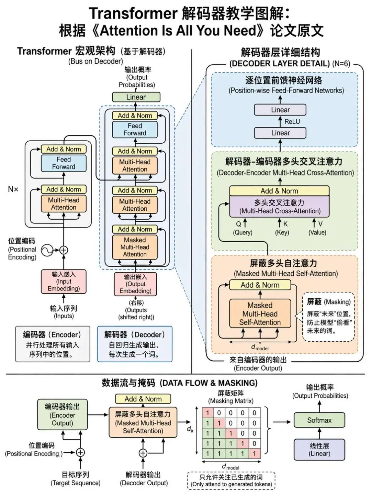
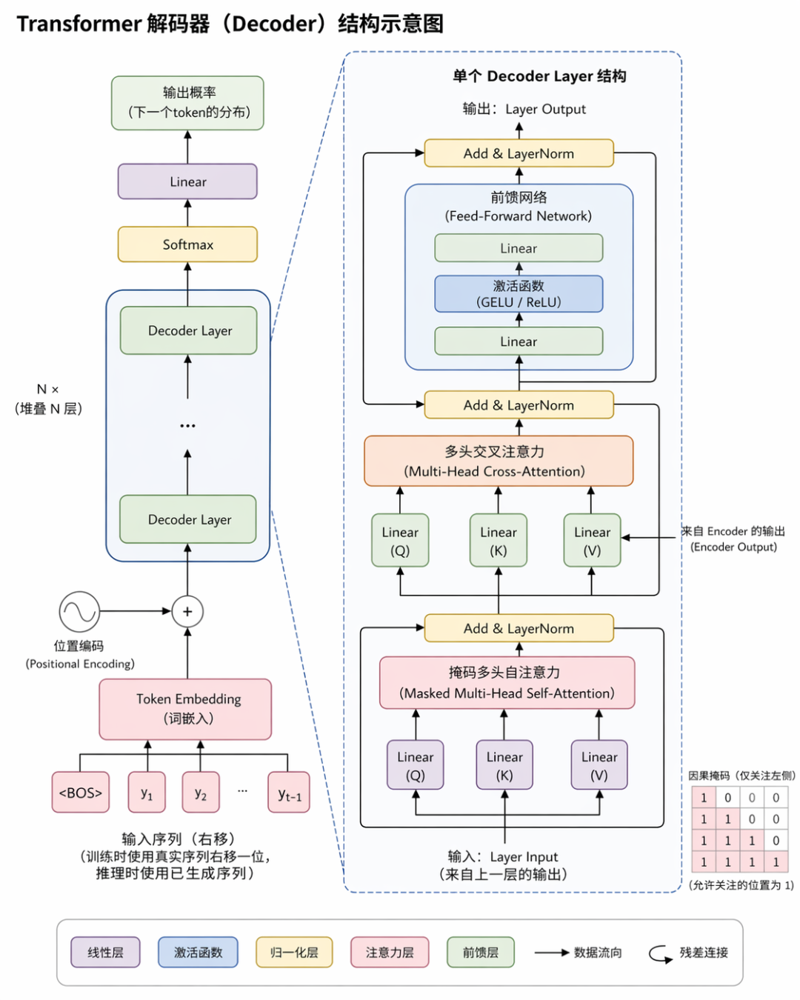
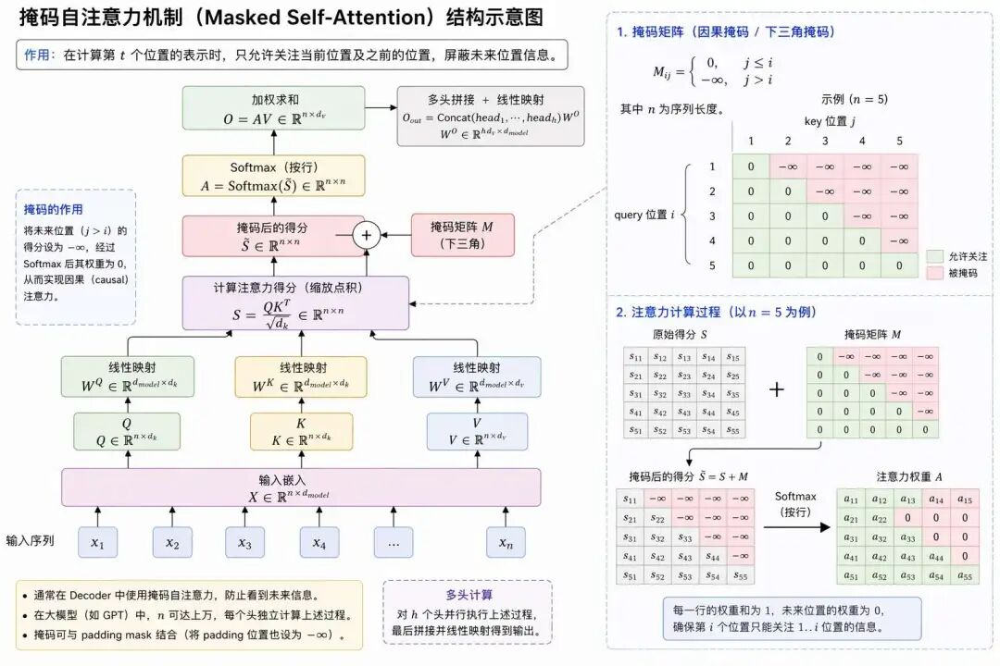
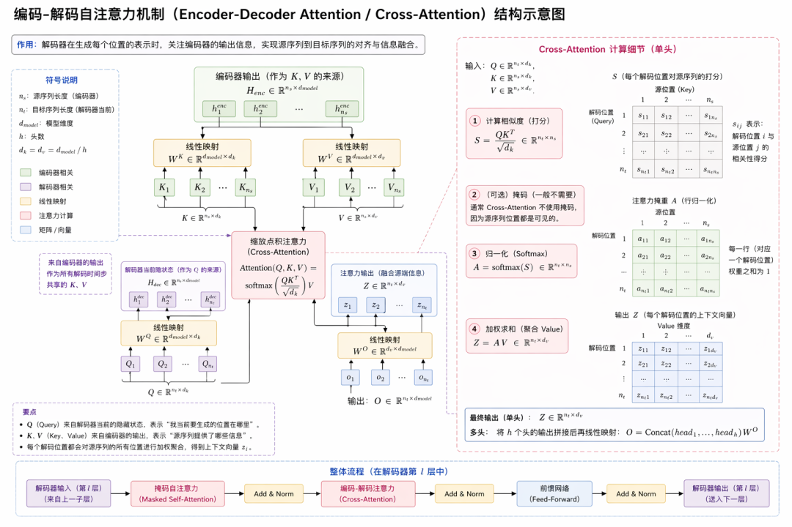
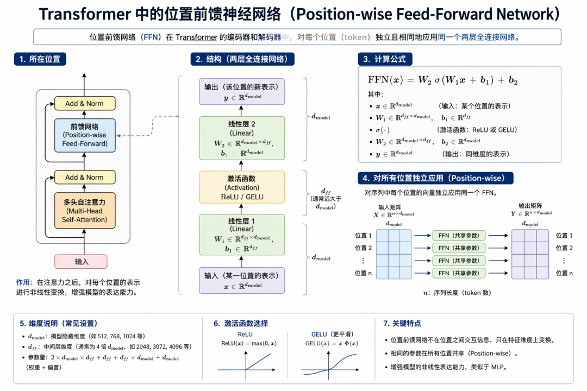

“2029年实现AGI，2045年进入技术奇点，AI能力将超越人类智能数十亿倍。”——雷·库兹韦尔（Ray Kurzweil）
Decoder和Encoder的这种独特的架构模式，为何在 Seq2seq中并没有发挥出这样爆炸性的效果，而在Transformer中却引发了新一轮的AI技术浪潮？
其中的奥妙就在于编解码的协作机制：Encoder专注于输入理解，通过自注意力机制为输入序列中的每个词元生成带有全局上下文信息的隐藏表示序列，其本质是提取跨词元和整条序列的多维语义特征，通过自注意力捕获长距离依赖；
而Decoder则专注于输出生成，核心是通过掩码自注意力机制约束历史信息流，并借助Encoder-Decoder注意力层动态锚定源语义的关键片段（如中文“猫”到英文“cat”的映射），实现从理解到创造的飞跃，接下来我们就要进入到decoder的世界。

与Encoder一样的是，对于输入的序列（句子）我们首先要进行分词，分词之后再通过词表将词元转换为整数 Token ID，比如还是这样一句话：“小明打了小强，但自己也被老师批评了”
分词结果：[“小明”, “打”, “了”, “小强”, “，”, “但”, “自己”, “也”, “被”, “老师”, “批评”, “了”]，然后分词后词元需通过词表（Vocabulary）转换为整数 Token ID 序列：
| 词元 | Token |
|---|---|
| bos（序列开始） | 1 |
| eos（序列结束） | 2 |
| unk（未知词） | 0 |
| "小明" | 10 |
| "打" | 23 |
| "了" | 5 |
| "小强" | 15 |
| "，" | 6 |
| "但" | 20 |
| "自己" | 7 |
| "也" | 30 |
| "被" | 31 |
| "老师" | 45 |
| "批评" | 42 |
[1, 10, 23, 5, 15, 6, 20, 7, 30, 45, 42, 5, 2]
对应：
<bos>, 小明, 打, 了, 小强, ，, 但, 自己, 也, 被, 老师, 批评, 了, <eos>
这里需要注意的是，因为decoder是一个自回归的过程，因此需要有“开始”和“结束”，添加特殊标记：句首添加〈bos〉，句尾添加〈eos〉，标识序列边界。

由于Transformer的解码器能够并行处理所有位置，如果在训练阶段直接将完整目标序列作为输入，模型会在预测第t个词时"看到"第t+1、t+2...个词，这相当于提前知道了答案，使训练失去意义。
比如我们的目标是模型要生成的最终句子：[小明, 打了, 小强, 但, 自己, 也, 被, 老师, 批评了, <eos>]，其中<eos>是结束标记。
然而解码器的训练逻辑是让模型“逐词预测下一个词”，而非直接看到完整句子。
因此右移后，解码器的实际输入变为：[<bos>, 小明, 打了, 小强, 但, 自己, 也, 被, 老师, 批评了]，<bos>是起始标记，整体右移1位，末尾去掉<eos>
右移的核心目的，是让位置 $t$ 的输入只能包含目标序列中 $t$ 之前的词，从而去预测第 $t$ 个词；否则模型会“看着当前位置的真实答案去预测当前位置”，训练目标就会退化。
如果不右移，当模型预测第2个词“打了”时，会“看到”后面的“小强、但、自己也被老师批评了”——相当于提前知道“小明”之后要接这些内容，无需学习“小明”和“打了”的逻辑关联，只需“记住”序列即可。
最终模型学不会“基于前文生成后文”，比如换个句子“小红骂了小刚，但自己也被班长警告了”，模型就无法迁移，训练完全失效。
右移后，模型预测每个词时，只能看到“前面的词”：
以此类推，直到预测<eos>→ 只看到前面所有词，确保模型是“推理生成”而非“记忆复制”。
我们平时说话/写作，都是先想“小明”，再想“小明”做了什么（打了），再想对象（小强），接着转折（但），最后说结果（自己也被老师批评了），这就是自回归特性：后一个词依赖前一个/多个词。
在完成输入编码之后，与Encoder一样，需要为每个Token添加位置信息，使模型感知词序。
（1）依然采用正弦（$sin$）和余弦（$cos$）函数实现位置编码，每个位置 $pos$（从0或1开始计数）对应一个固定向量；
（2）向量的不同维度（即词嵌入的维度，比如 $d_{model}=512$）用不同频率的 $sin/cos$ 函数生成；
（3）位置编码与词嵌入直接相加（维度相同），不改变词嵌入的语义信息，只附加位置信息。
对输入进行右移之后，我们在训练阶段要怎么实现不让模型提前“偷看”后续词呢？能不能“掩盖”起来？这就要引出我们的掩码自注意力机制了，掩码自注意力机制在结构上和自注意力机制基本上没有什么不同，QKV的生成过程是一样的：
输入 $X$= ［〈BOS〉, I, have, a] → 生成掩码矩阵（下三角）→ 计算自注意力 → 输出 $Z_{mask}$。
只是“掩码”，多了“掩码”两个字而已，但是相比于encoder中的自注意力机制，其作用和意义就发生了很大的区别。

首先这个机制很大程度上是为了训练而设计的，更准确地说，是为了让语言模型的“下一个词预测”任务成立。因为大模型预训练通常属于“自监督学习”，标签并非人工标注，而是由原始文本自动构造出来。
其次训练和推理要保证一致性，既然训练时通过掩码这个机制来模拟了逐词生成的环境，推理时掩码的逻辑应与训练逻辑保持一致，避免模型行为产生偏差。
| 阶段 | Decoder 输入 | 输入来源 | 是否使用掩码 |
|---|---|---|---|
| 训练 | 右移后的完整目标序列（如“ I have a”） | 并行输入全部词元 | 是（模拟逐步生成） |
| 推理 | 已生成的部分序列（如“ I have”） | 逐步生成，每次追加新词元 | 是（真实逐步生成） |
这里涉及到“推理”的概念，在之前的详解有过介绍，这里做一个简单的回顾，
接下来我们就来说说这个掩码机制到底是怎么实现的，以目标输出序列“I have a cat”为例，训练时右移后的Decoder输入为：[bos, I, have, a]，而对应标签为：[I, have, a, cat, eos]。
然后看下面这个“下三角掩码矩阵”，其实现机制就很清晰：
[
[1, 0, 0, 0], # 位置0输入为 <BOS>，只能看 <BOS>，用于预测 "I"
[1, 1, 0, 0], # 位置1输入为 "I"，可看 <BOS> 和 "I"，用于预测 "have"
[1, 1, 1, 0], # 位置2输入为 "have"，可看 <BOS>、"I"、"have"，用于预测 "a"
[1, 1, 1, 1] # 位置3输入为 "a"，可看前面所有输入， 用于预测 "cat"
]其中1表示允许关注，0表示屏蔽未来位置。在计算Q与K的点积得分后，将未来位置（掩码为0的区域）的分数加上一个极小的负数（如-1e9），使Softmax后未来位置的权重趋近于零。例如，生成“have”时，“a”和“cat”对应的注意力分数则被抑制，这样就实现了掩码的效果。完整的处理过程如下：
这里解释一个大多数人可能产生的困惑点，训练的标签是什么？
| 输入位置 | 可见词元 | 需预测的词元 |
|---|---|---|
| 0 | <BOS> | → “I” |
| 1 | <BOS> ，I |
→ “have” |
| 2 | <BOS> ，I，have |
→ “a” |
| 3 | <BOS> ，I，have，a |
→ “cat” |
与encoder模块一样需要残差连接&层归一化，在多头掩码自注意力机制处理完毕，也需要通过残差连接和层归一化，提升深层网络的训练中的稳定性问题。
其中残差连接确保关键信息：位置编码、低频特征等能够沿着更直接的路径穿过深层网络；
而层归一化则是抑制子层输出的数值波动，为后续层提供稳定输入。
也许你在其他地方会看到一个叫做“交叉自注意力机制”的存在于Transformer中，这指的也是“编码-解码自注意力机制”。
层归一化处理完成之后，输出结果就给到编码-解码自注意力机制继续来处理了。
那这个机制的作用是什么呢？顾名思义，这个机制肯定跟编码器有关，其实“编码-解码自注意力机制”中“编码”的含义指的就是要引用编码器输出的 $K、V$。

$Q、K、V$ 中的 $K$ 和 $V$ 就来自于Encoder，而 $Q$ 则来自于多头掩码自注意力机制+残差处理得到的结果，因此理解了 $Q、K、V$ 三者的来源，也就理解了编码-解码自注意力机制。
为什么 $Q$ 来源于Decoder，而 $K、V$ 则来源于Encoder？这个问题的答案同时也是Transformer比Seq2Seq强大的原因之一。
Transformer通过Encoder输出完整隐藏状态序列而非单一向量，作为Decoder编码-解码注意力的Key-Value对；
Decoder在自回归时生成每个的词（即Q），可通过“注意力头”自主选择聚焦Encoder输出的特定片段（即K、V），如生成“猫”时，会重点匹配K中“cat”的编码，确保语义一致。
以翻译句子：“I have a cat”为例：
编码器：把英文原句“I have a cat”变成一份“结构化原文语义档案”——包含每个单词的含义、单词间的关系（比如“have”是“我”的动作，“cat”是动作对象），这份档案是固定的（不管生成哪个译文词，原文信息不变），对应交叉注意力里的K（关键词索引）和V（语义细节）。
解码器：按顺序生成中文译文，每一步只知道“已经生成的词”（比如生成“猫”之前，只知道“我有一只”），它会把“当前生成进度”变成一个“查询需求”——比如生成“只”之后，需要知道“接下来该接什么名词，才能匹配原文”，这个“查询需求”就是交叉注意力里的Q。
解码器每生成一个词，就会根据“已生成的内容”提一个针对性的“疑问”：
解码器拿着“问题/Query”，去查询编码器的“原文档案”（Key）：
找到匹配的原文位置后，再从“档案”里提取该位置的详细语义（V），和解码器当前的生成状态结合：
注：8个注意力头可捕捉不同对齐关系（如头1更关注语法对齐“我→I”，头2更关注语义对齐“猫→cat”），拼接后得到更全面的语义表示。
交叉注意力解决了“译文与原文对齐”的问题（比如知道“只”对应“cat”），但输出的语义表示还比较“粗糙”，因为可能包含冗余信息，或缺乏目标语言的语法、搭配特征（比如中文“一只猫”的量词习惯）。
FFN的作用就是对每个译文位置的向量，比如“只”“猫”对应的512维向量，做独立的非线性变换，提炼关键语义；
其中发挥关键作用的激活函数，以及升维变换都能够增强模型的表达能力，让解码器能学习到目标语言的固有规律，比如语序、固定搭配，而非仅依赖原文对齐。

要学习位置前馈神经网络，先要搞清楚什么是前馈神经网络，前馈神经网络的英文全称为Feedforward Neural Network。
简称FNN，是最基础、最核心的神经网络架构，其信息从输入层到输出层单向流动，无循环、无反馈，仅通过逐层线性变换+非线性激活，实现从输入到输出的映射，简单来说就是“信息只往前走，不回头”。
如我们最初学的多层感知机，以及后续学习的卷积神经网络。而循环神经RNN、长短期记忆网络LSTM等，由于信息不是单向流动就不属于前馈神经网络了。
前馈神经网络的结构是怎样的呢？前馈网络通常由两个线性变换和一个激活函数（如 ReLU）组成，通过线性变换实现：升维 → 非线性激活 → 降维：
hidden = W1 × X + b1
hidden = ReLU(hidden)
output = W2 × hidden + b2这个过程的主要目的对每个单词的表示进行进一步的非线性变换，因为激活函数可以突破线性表达能力的束缚，以增强模型的表达能力。
那Transformer中位置前馈神经网络要怎么理解呢？
位置前馈神经网络的英文全称为Position-wise Feed-Forward Network，是Transformer中的标准前馈子层，核心区别在于“位置”二字，强调 “逐位置独立处理”规则。为何要强化位置的语义？
因为Transformer中注意力机制（自注意力/交叉注意力）的核心是跨位置信息交互，比如捕捉“I have a cat”中“have”与“cat”的动宾关系，但存在两个天然局限：
其一是注意力输出是“关联型特征”：侧重单词间的依赖，却缺乏对单个单词自身固有属性的精细化提炼，比如“cat”作为“动物名词”“可数名词”的特征；
其二是因为注意力计算是“线性加权求和”，本质是对其他位置向量的线性组合，缺乏非线性表达能力，难以捕捉复杂语义模式，比如“名词+量词”的搭配规则。
而FFN的核心作用是单位置非线性提纯：对每个位置的向量独立做“升维→激活→降维”的非线性变换，刚好弥补注意力的不足——相当于注意力“织好了全局关系的网”，FFN再“把网的每个节点磨得更锋利”，让每个位置的特征既包含全局依赖，又具备自身的精细化属性，实现的整体逻辑如下：
FFN将512维向量升维到2048维，让每个位置的向量能容纳更多语义细节，比如“cat”的“动物属性”“与‘只’搭配”“对应中文‘猫’”等多重特征，避免特征拥挤；
ReLU激活函数能筛选出“有效特征”，置零无效特征，让模型学习到非线性规则，比如“如果是动物名词，则强化量词搭配特征；如果是动词，则强化主谓搭配特征”；
最终还原为512维，既保留了优化后的核心特征，又能适配后续的残差连接+层归一化，确保模型流程顺畅。
每个Decoder层的FFN输出后，首先完成残差连接+层归一化，而且整个Decoder层内部会按“掩码自注意力→残差+层归一化→交叉注意力→残差+层归一化→FFN→残差+层归一化”的顺序执行。
以原始 Transformer Base 为例，6层堆叠后，得到Decoder的最终输出，维度可表示为：(batch_size, seq_len, 512)。
Decoder的全局输出是“语义向量”（如(1,4,512)），无法直接对应具体词汇，需通过线性变换建立“语义→词汇”的映射：将512维的语义向量，映射到“词汇表大小（V）”维度，每个维度对应一个词汇的“原始得分”；
$$ logits = decoder的最终输出 × W + b； $$第5个位置（“只”）对应的logits向量中，“猫”的得分高达12.3（无界实数），“狗”仅1.2，“书”0.8——因为语义向量已明确“只”后面需接“cat”对应的动物名词，线性变换会放大这种适配性。
线性变换本质是“多分类的得分映射”——把每个位置的语义向量，转化为对词汇表中所有词的“适配度得分”，为后续概率计算做准备。
线性变换得到的logits是无界值，需转为0~1的概率分布，方便模型“选词”：
仍以第5个位置（“只”）对应的logits向量为例，“猫”的得分高达12.3（无界实数），“狗”仅1.2，“书”0.8，
因此“只”对应的概率向量中，“猫”的概率为92%，“猫咪”3%，“小狗”0.3%，其余词概率均低于0.1%；
Softmax让“语义最匹配”的“猫”成为最优选择，同时保留少量其他可能（如“猫咪”），避免绝对化。
这是译文生成的核心闭环，模型逐词生成并反馈输入，直到完成完整句子：
“只”对应的概率向量中，“猫”的概率为92%，是不是一定要选猫？这和我们的解码策略有关，如果是贪心解码选词（论文默认策略），则取概率最高的词作为当前步输出，然后当前输出序列更新为：<sos> 我 有 一 只 猫。
接着继续循环迭代，将“猫”转化为512维词嵌入+位置编码（位置6对应的PE），作为下一次Decoder的输入；
Decoder重复执行“掩码自注意力→交叉注意力→FFN→后续处理”，计算下一个词的概率分布。
直到生成句尾标记出现<<eos>，比如下一轮计算中，“猫”对应的语义向量经处理后，logits中<<eos>（句尾标记）的概率达到98%；最终argmax选中<<eos>，模型停止循环，最终译文为：我有 一 只 猫 <eos>。
总结来看，Decoder并不是一个单纯“把结果吐出来”的模块，而是Transformer中真正承担“生成”任务的核心部分：它先通过输入右移和掩码自注意力，严格保证每一步都只能基于已有历史信息进行自回归预测；
再通过编码-解码注意力，持续从Encoder提供的源语义表示中提取与当前生成最相关的信息，实现“边生成、边对齐、边理解”；
随后再借助位置前馈神经网络，对每个位置的语义表示做进一步的非线性提炼与强化，最终经过线性变换与Softmax输出下一个词的概率分布。
也正因为有了这一整套环环相扣的机制，Decoder才能既保持生成过程的因果性，又始终紧扣输入语义，从而让Transformer真正具备高质量的翻译、续写与文本生成能力。
输入右移（Shift Right）：指在训练 Decoder 时，不把完整目标句子原样喂进去，而是先在句首加上 <BOS>，再整体右移一位，让模型在当前位置只能根据“前面已经出现的内容”去预测“下一个词”。它的核心意义，不只是形式上的错位，而是保证训练目标真正符合“自回归生成”的本质，避免模型直接看到当前位置的标准答案。
掩码自注意力（Masked Self-Attention）：指 Decoder 在做自注意力计算时，通过下三角掩码屏蔽未来位置的信息，使每个位置只能关注自己及之前的内容。它的关键价值，不是简单“遮住后面的词”，而是让 Transformer 在并行训练时，依然严格遵守“只能根据历史生成未来”的因果约束，从而在训练阶段模拟出推理阶段逐词生成的真实条件。
交叉注意力（Cross-Attention）：指 Decoder 在生成目标词时，不仅参考自己已经生成的历史内容，还会去查询 Encoder 输出的源句表示。其中 Q 来自 Decoder 当前状态，K 和 V 来自 Encoder 输出。它的本质作用，不是单纯“看一眼原文”，而是让解码器在每一步生成时，都能有针对性地从源句中提取最相关的语义信息，实现“边生成、边对齐、边理解”。
位置前馈神经网络（Position-wise Feed-Forward Network, FFN）：指 Transformer 在注意力计算之后，对序列中每一个位置的向量分别进行一次独立的“升维→激活→降维”非线性变换。它的重要性，不在于补充上下文关系，而在于对每个位置已经聚合好的语义表示做进一步提纯和增强，使模型不仅能知道“这个词和谁有关”，还能更深地刻画“这个词自身是什么”。
自回归生成（Autoregressive Generation）：指模型每次只生成一个词，并把这个新生成的词追加到已有序列中，作为下一步输入，循环往复，直到生成 <eos> 为止。它的核心特征，不是“一个一个往外吐词”这么简单，而是整个生成过程始终建立在“当前输出依赖于此前所有输出”的链式条件关系之上，这也是 Decoder 能够完成文本续写、翻译和对话生成的根本机制。